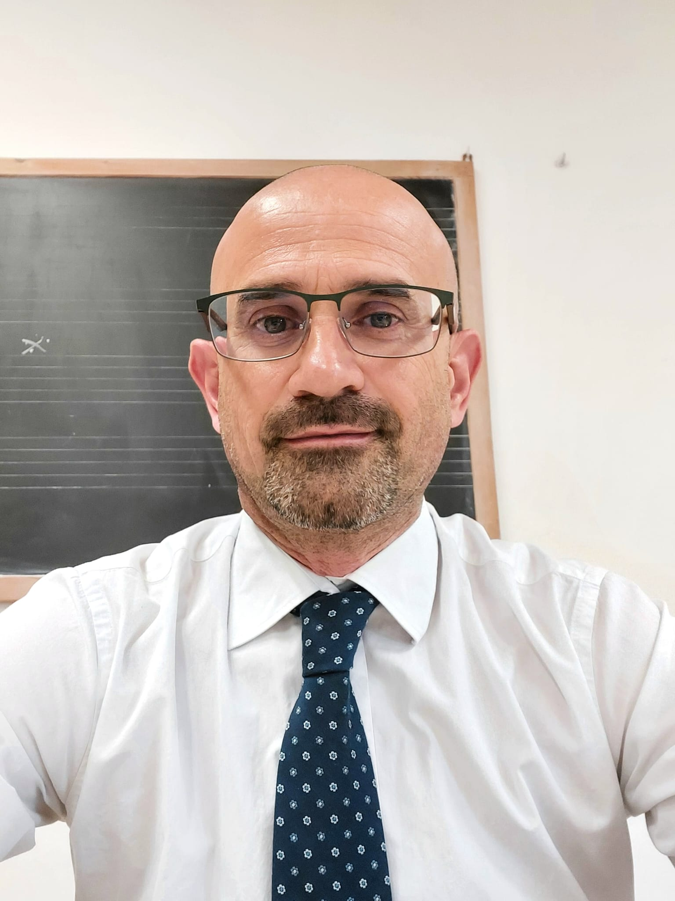
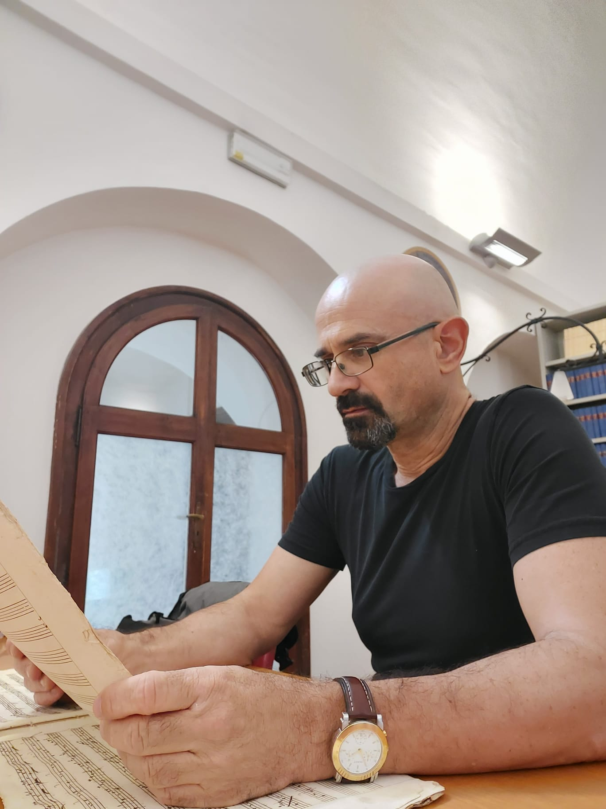
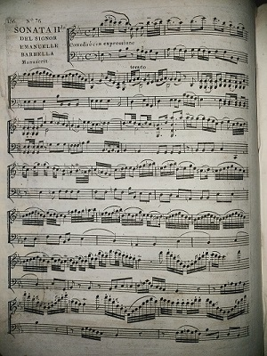
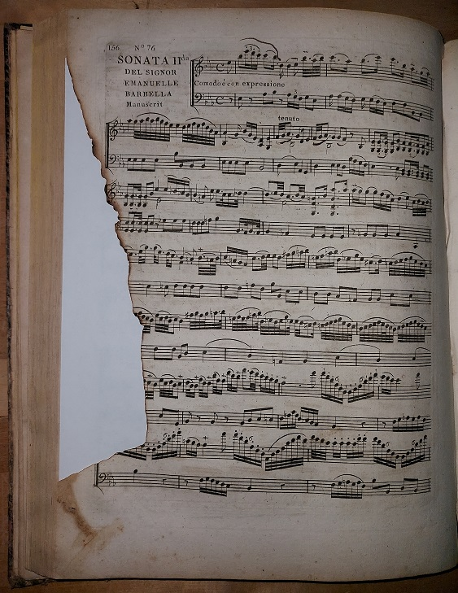

Luca Moretti

Luca Moretti ha compiuto gli studi musicali presso il Conservatorio di Musica
“Francesco Morlacchi” di Perugia
dove ha conseguito il diploma accademico di II livello in Viola con il massimo dei voti.
All'intensa attività concertistica, svolta in varie formazioni cameristiche ed orchestrali per associazioni e festivals d'Italia,
Francia, Spagna, Svizzera, Grecia, Lussemburgo, India, Giappone e Stati Uniti d'America, ha affiancato quella di
“curatore” nella pubblicazione di partiture inedite di importanti autori quali
W.A.Mozart, G.Rossini, K.Stamitz, A.Rolla, G.F.Giuliani,
G.Puccini G.B.Pergolesi, F.Morlacchi ecc, per le case editrici Ut Orpheus e Anteo.
Da alcuni anni ha inoltre avviato un progetto per il restauro e la valorizzazione di fonti musicali antiche di particolare importanza.
L' “Archivio musicale Luca Moretti” che conserva questi preziose opere ha recentemente ricevuto
un importante riconoscimento, essendo stato inserito nel database del RISM
(Repertoire International des Sources Musicales) con il codice “I-PEMoretti”.
Già docente nei Conservatori di Cagliari, Monopoli, Foggia, Salerno, Parma, Darfo Boario terme, Pesaro e Lucca, è
attualmente titolare, presso il Conservatorio di musica
“Francesco Morlacchi” di Perugia, della cattedra di
“Teoria ritmica e Percezione Musicale”, disciplina nella quale da diversi anni sperimenta innovativi percorsi
didattici dedicati, in particolare, alla ritmica della musica contemporanea.

L'Archivio musicale

Jean Baptiste Cartier, L'Art du violon, Paris 1798, pagina dopo il restauro
Le aggiunte all'archivio, relativamente nuovo, vengono regolarmente pubblicate sulla
pagina Facebook.
I circa 400 pezzi dell'archivio comprendono edizioni musicali a stampa del XVIII e XIX secolo,
tra cui numerosi trattati e manoscritti musicali. Molte edizioni del XIX secolo non
sono ancora presenti nel RISM e saranno aggiunte completamente nuove. La collezione continua a crescere e ci vorrà del
tempo prima che tutto il materiale sia disponibile nel RISM.
Il progetto è nato dal desiderio di recuperare vecchie edizioni danneggiate,
salvarle dalla rovina
ed evitare che vadano perse. Luca Moretti considera suo dovere prendersi cura di un'opera d'arte
(indipendentemente dalla categoria a cui appartenga) e farla conoscere rendendola accessibile a tutti.
Ciò significa far rivivere l'opera, onorare la memoria del suo creatore e offrire un contributo importante alla conoscenza.
In altre parole, desidera "dare un significato all'opera stessa".
Qualche anno fa, Luca Moretti ha iniziato a ricercare testi antichi, musiche e altro materiale di interesse musicale,
concentrandosi sul repertorio per archi e sulla didattica. Tutto ciò che poteva "raccontare la musica" è diventato oggetto del
suo studio. Le sue prime acquisizioni erano limitate dalle sue possibilità finanziarie e si trattava quindi di edizioni in
cattive condizioni, dovute sia all'età, sia a eventi casuali, sia all'incuria del precedente proprietario. Nel corso del tempo,
un laboratorio di restauro librario è diventato un partner costante dell'archivio e i
restauratori sono riusciti a realizzare lavori di restauro impegnativi. Anche dal punto di vista economico, hanno ottenuto
risultati straordinari.

Jean Baptiste Cartier, L'Art du violon, Paris, 1798, pagina parzialmente bruciata